犬庫欣氏症：診斷與內科治療
主講：Antonio Tardo, DVM, PhD, Dipl. ECVIM-CA｜UC Davis 小動物內科助理教授
2026 年 10 月 7 日｜VET-KU × Texas A&M 內科研討會｜場次 12
🎧 聆聽課堂錄音（Plaud）↗
資料來源標記：
投影片（頁碼為投影片右下角編號）
🎤 課堂逐字稿
✍️ 筆記 上課筆記
💡 補充 整理者補充（機轉、交叉參照）
【更正】 逐字稿轉文字錯誤，以講義為準（完整列表見最後一節）
⭐ 必記原則
- 先有臨床懷疑，再做內分泌檢測；基本檢查全正常就不像庫欣
- 沒有 PU/PD 的庫欣很少見
- 庫欣犬食慾變差：想到腦下垂體大腫瘤，先做頭部影像
- 每次回診都量血壓，高血壓可能在治療後才出現
- Immulite 換抗體：血清約 -23%、尿液約 -70%，舊切點不能沿用
- UCCR 敏感度只剩 80%，正常也不能排除
- ACTH 刺激試驗對 ADH 容易偽陰性：腫瘤失去 ACTH 受體
- LDDST 是首選篩檢；第 8 小時新切點約 1.2 µg/dL
- 內生性 ACTH 是最好的區分檢查，但要維持冷鏈
- Trilostane 0.5–1 mg/kg q12h、與食物一起給、最多 30 mg q12h
- 狗不舒服、不吃、要麻醉：先停 trilostane
- 4 個月沒有完全緩解：考慮其他治療
核心觀念與總覽
▾🎤 場次資訊
- 講者：Antonio Tardo（DVM, PhD, Dipl. ECVIM-CA），UC Davis 小動物內科助理教授。也是 01 PU/PD 和 08 DKA/HHS 的講者。
- 🎤 上一場談的是腎上腺功能低下（Addison），這一場談腎上腺功能亢進。講者開場就說：庫欣的處置在大多數情況下比 Addison 更複雜。
- 🎤 本場只談狗，不談貓。前半段講所有可用的診斷檢查，後半段因為時間關係，只講最重要的內科治療 trilostane。替代療法留給下一場 Bugbee（見 13）。
💡 補充 與其他場次的關聯
- PU/PD 與低 USG 的鑑別：見 01 PU/PD 診斷流程。
- 同一個抗體改變也影響 Addison 的皮質醇判讀：見 11 犬 Addison 氏症。
- 庫欣會誘發糖尿病，也會造成胰島素阻抗：見 02 犬糖尿病與胰島素。
1. 定義與 HPA 軸
▾🎤 庫欣氏症候群（皮質醇過多症）
- 定義（ESVE 的 ALIVE 計畫）：庫欣氏症候群是一個總稱，泛指由糖皮質素作用長期過量所造成的一系列臨床症候群。過量的來源可以是內生的，也可以是外源的類固醇。
- 🎤 它不是單一疾病。內生性和外源性（醫源性）都算同一個症候群。
- 🎤 ESVE 網站上的 ALIVE 計畫頁面，可以找到本場投影片中的定義、資料和圖片。
🎤 下視丘－腦下垂體－腎上腺軸（HPA 軸）
🎤 要先懂 HPA 軸，才看得懂後面所有內分泌檢查的設計。
健康犬
- 下視丘分泌 CRH，腦下垂體分泌 ACTH
- ACTH 刺激腎上腺分泌皮質醇
- 皮質醇負回饋抑制腦下垂體與下視丘
PDH（約 80–85%）
- 最常見，小型犬較多
- 腦下垂體腫瘤分泌過多 ACTH
- 兩側腎上腺都受刺激增生
ADH（約 15–20%）
- 腎上腺皮質的腫瘤自主分泌皮質醇
- 負回饋壓低 ACTH，ACTH 偏低或測不到
- 對側腎上腺萎縮
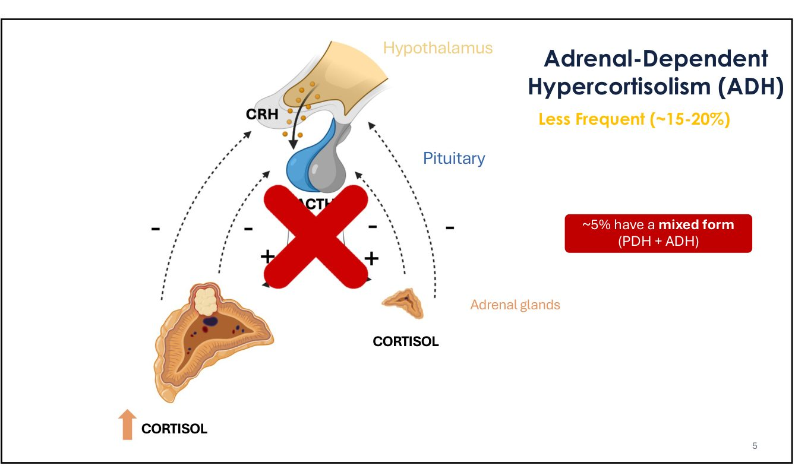
約 5% 是混合型（PDH 與 ADH 同時存在）。🎤 這也是講者認為庫欣犬要做腦下垂體影像的原因之一。
🎤 Harvey Cushing 與第一位病人
- Harvey Williams Cushing（1869–1939），美國神經外科醫師。1910 年描述病人 Minnie G.：「番茄頭、馬鈴薯身體、四根火柴棒腿」。
- 🎤 這在人醫是很罕見的疾病，至今仍是庫欣病人的典型外觀。狗是人類庫欣的轉譯醫學模型，有些新藥的研究對人醫也有幫助。
2. 流行病學與臨床表現
▾🎤 狗的流行病學
發生率
- 每年每 1000 隻狗有 1–2 隻
盛行率
- 0.17–0.28%
診斷年齡
- 9.8 ± 2.5 歲
- 中老年、常見小型犬、常見母犬
- 🎤 狗第三常見的內分泌疾病。資料來自講者在 Bologna 的研究，約 2 萬隻狗的族群（Carotenuto 2019）。
- 🎤 它是腫瘤性疾病，所以是中老年犬的病。
- 🎤 大型犬得到庫欣時，較常是腎上腺腫瘤，所以大型犬要特別用超音波看腎上腺。
- 🎤 好發品種會因國家而異，常見的有臘腸、貴賓、拳師、約克夏、迷你雪納瑞。
🎤✍️ 典型樣貌與最常見的症狀
- 🎤 典型樣貌：垂腹、兩側對稱性脫毛、肌肉萎縮、PU/PD。
- 🎤 每個病例的外觀都不同，很少看到所有症狀都出現的狗。講者分享病例 Penelope：飼主說「PU/PD 才幾天」，但外觀明顯是長期的庫欣。現在大家比較早懷疑這個病，所以會看到更多不典型、甚至沒有脫毛的病例。
- 🎤 最常見的症狀是 PU/PD（約 80–90%）。如果飼主說狗沒有 PU/PD，講者會懷疑是不是真的庫欣。
- 其他：皮膚變化、肝腫大、多食、喘、肌肉無力、嗜睡。
上課筆記：兩側對稱性脫毛（bilateral alopecia）。主要在軀幹與腹側，頭部和四肢通常不受影響；不癢，除非合併膿皮症或皮膚鈣化。
💡 補充 皮質醇抑制毛囊進入生長期，毛會掉也長不回來。鑑別診斷包括甲狀腺功能低下、性荷爾蒙相關脫毛、Alopecia X。
💡 補充 皮質醇抑制毛囊進入生長期，毛會掉也長不回來。鑑別診斷包括甲狀腺功能低下、性荷爾蒙相關脫毛、Alopecia X。
🎤 沒有多食，或食慾變差：可能是腦下垂體大腫瘤壓迫下視丘的飢餓中樞。這在庫欣犬是令人擔心的徵兆，而且 trilostane 會讓食慾更差。詳見 第 10 節。
🎤 較少見的症狀：皮膚鈣化與草酸鈣結石
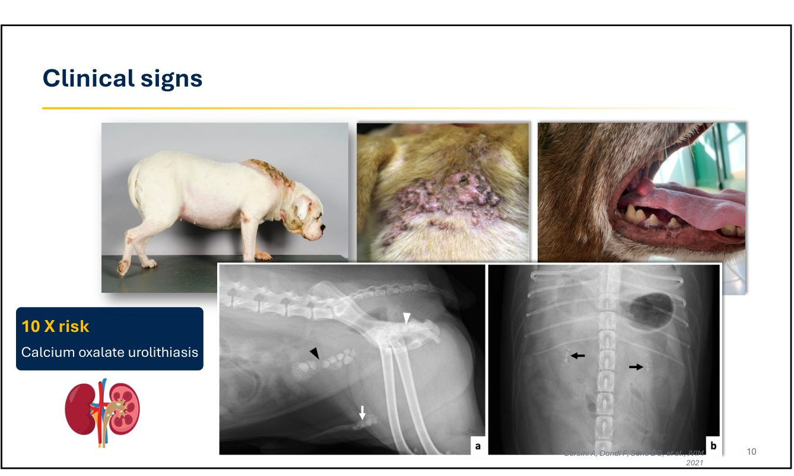
- 🎤 皮膚鈣化（calcinosis cutis）在庫欣犬並不常見，但在短吻品種明顯較多，原因不明。講者分享一隻皮膚鈣化的病例，原本懷疑是腫瘤，細針抽吸才確認是鈣化。
- 庫欣犬發生草酸鈣結石的風險是同品種、同年齡狗的 10 倍（Corsini 2021）。
- 🎤 出現血尿、膿尿等泌尿道症狀時，要檢查泌尿道感染或結石。
🎤✍️ 肌肉僵硬（庫欣性肌強直）
- Golinelli 2023：37 隻狗、10 家轉診中心，全部都是 PDH，60% 影響後肢。
- 🎤 講者播放影片：狗的後肢很僵硬，走路呈現一種很典型、有點好笑的跳躍步態。
- 🎤 庫欣治療好了，肌強直通常還在。研究中試了很多藥物，只有少數狗輕微改善，沒有一隻完全緩解。
上課筆記：像兔子一樣跳（bunny hopping）。後肢伸肌持續僵直、關節彎不下去，狗只好兩隻後腿併在一起往前跳，剛起身時最明顯。
💡 補充 容易被誤認成十字韌帶、髖關節或脊髓問題。中老年犬出現兔子跳加上 PU/PD、垂腹，就要想到庫欣。開始治療前要先告知飼主：僵硬可能不會好。
💡 補充 容易被誤認成十字韌帶、髖關節或脊髓問題。中老年犬出現兔子跳加上 PU/PD、垂腹，就要想到庫欣。開始治療前要先告知飼主：僵硬可能不會好。
3. 全身性高血壓
▾🎤✍️ 盛行率、風險因子與處置
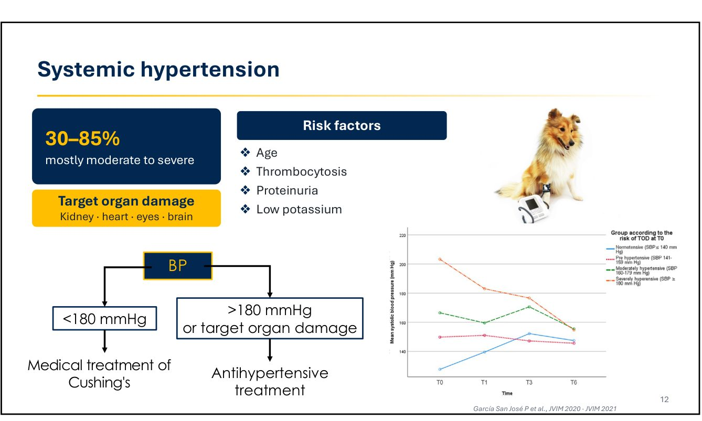
- 盛行率 30–85%，大多是中度到重度。不診斷出來，就會造成標的器官傷害（腎、心、眼、腦）。
- 風險因子：年紀、血小板增多、蛋白尿、低血鉀（García San José 2020）。
- 🎤 高血壓可能在診斷時就存在，也可能在治療庫欣之後才出現（García San José 2021 追蹤一年的資料）。
| 收縮壓 | 講者的做法 |
|---|---|
| < 180 mmHg | 先開始庫欣的內科治療 |
| > 180 mmHg 或已有標的器官傷害 | 庫欣治療與降壓藥同時開始，因為超過 180 時標的器官傷害的風險更高 |
上課筆記：老師建議每次回診都要量血壓。🎤 講者原話的意思是：就算診斷時血壓完全正常，之後每次看到這隻狗都要再量。
💡 補充 高血壓沒有明顯症狀，等到視網膜剝離或蛋白尿惡化，器官已經受傷了。建議搭配 UPC 一起追蹤，並固定袖帶尺寸與量測部位。
💡 補充 高血壓沒有明顯症狀，等到視網膜剝離或蛋白尿惡化，器官已經受傷了。建議搭配 UPC 一起追蹤，並固定袖帶尺寸與量測部位。
4. 常規實驗室檢查
▾🎤 常見異常
生化
- ALP ↑
- ALT ↑、GGT ↑
- 高血脂
- 高血糖
- 高血磷
- 結合球蛋白（haptoglobin）↑
血液學
- 血小板增多
- 壓力型白血球像：淋巴球↓、嗜酸球↓、嗜中性球↑
- 輕度紅血球增多
尿檢
- 低 USG（< 1.015）
- 蛋白尿（約 50%）
- 細菌尿
- 🎤 庫欣犬的異常主要在生化，CBC 比較不明顯。
- 🎤 ALP、ALT、GGT 上升，但 AST 通常正常，這是皮質醇過多（內生或用類固醇）的典型模式。
- 🎤 高血糖：本身就是糖尿病的風險因子，因為庫欣容易誘發糖尿病。要注意 PU/PD 和高血糖是否惡化。
- 🎤 高血磷是負面預後因子，原因不明。已知庫欣犬有「腎上腺性次發性副甲狀腺功能亢進」，PTH 會上升（Corsini 2021）。
- 🎤 急性期蛋白：結合球蛋白高、CRP 正常偏低，因為皮質醇會刺激結合球蛋白、抑制 CRP。內生或外源的皮質醇過多都有這個模式。
- 🎤 細菌尿：免疫抑制讓牠們容易泌尿道感染。
- 🎤 合併糖尿病時，USG 可能正常，因為尿中的葡萄糖拉高了比重，但牠仍然有 PU/PD。
基本檢查（CBC、生化、尿檢）完全正常時，很可能不是庫欣。🎤 講者會重新考慮診斷，不會往下做內分泌檢測。
5. 診斷步驟與抗體改變
▾🎤 三個步驟
| 步驟 | 內容 |
|---|---|
| 1. 建立懷疑指數 | 品種年齡性別、症狀、身體檢查、常規檢驗 |
| 2. 篩檢 | UCCR、LDDST、ACTH 刺激試驗 |
| 3. 區分 PDH 或 ADH | LDDST、HDDST、內生性 ACTH、影像（腎上腺與腦下垂體） |
- 🎤 檢驗結果要搭配臨床表現與實驗室異常一起判讀。還有臨床懷疑時才做檢測。
- 🎤 ESVE 指引：一定要用經過驗證的實驗室方法。問你的實驗室：測皮質醇的方法有沒有經過驗證？參考範圍是多少？
- 🎤 本場所有數值都是根據 Siemens Immulite 2000（全世界最常用的機台）。換了實驗室或方法，數值可能不同。
🎤 犬皮質醇檢測的改變
- 2020 年 11 月，BSAVA 與 ESVE 聯合通知：ESVE 的內分泌品質保證計畫（EQA）發現，Siemens Immulite 2000 的皮質醇抗體永久更換，從試劑批號 Lot 550 開始。當時新抗體尚未在美國市場上市，其他機台不受影響。
- ESVE 分析 400 多個血清與 40 多個尿液檢體：
| 檢體 | 平均偏差 |
|---|---|
| 血清皮質醇 | 約 -23% |
| 尿液皮質醇 | 約 -70% |
🎤 結果完全不一樣，判讀也會完全不一樣。所以後面所有的診斷切點都要重新看。
💡 補充 免疫法為什麼會因為換抗體而改變
- Immulite 用化學發光免疫分析法：用抗體專一地抓住皮質醇，再用發光訊號換算濃度。
- 抗體多少會交叉反應，把結構相似的分子（皮質醇代謝物、其他類固醇）也算成皮質醇。
- 尿液中有大量皮質醇代謝物，偏差特別大的合理解釋是：新抗體的專一性比較高，比較少把代謝物算進去。通知本身只報告偏差大小，沒有說明原因。
- 不是狗的皮質醇變少了，是「尺」換了。照舊切點判讀，結果會偏向「正常」，造成偽陰性。
| 檢查 | 影響 | 目前做法 |
|---|---|---|
| UCCR | 影響最大 | 新切點 > 26 × 10⁻⁶，敏感度 80%（第 6 節） |
| LDDST | 第 8 小時的值偏低 | 切點從 1.4 改成約 1.2 µg/dL（第 8 節） |
| ACTH 刺激 | 刺激後數值偏低 | 尚無新研究，灰色區病例可能變多（第 7 節） |
| Trilostane 監測 | 目標範圍會改變 | 依實驗室更新後的範圍 |
- 同一隻狗新舊方法的數值不能直接比較；2020 年以前文獻的切點要小心套用。
6. UCCR（尿液皮質醇／肌酸酐比）
▾🎤 不再是敏感的排除工具
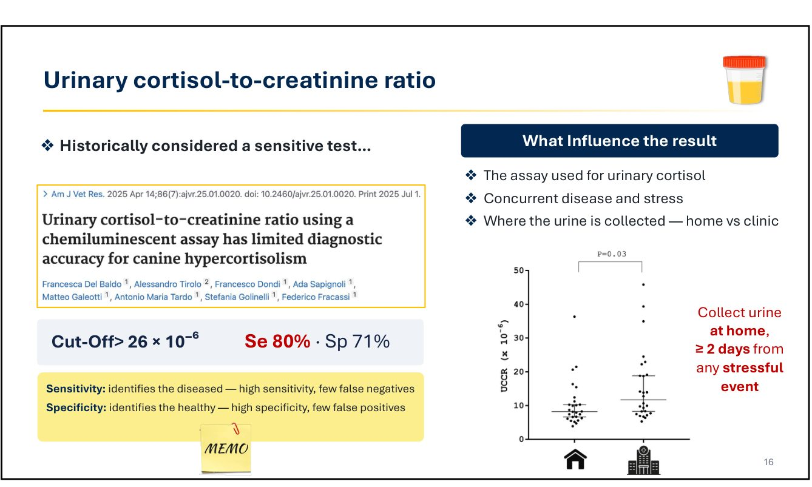
- 過去被認為是很敏感的檢查。因為換抗體，講者團隊重新評估（Del Baldo 2025）：新切點 > 26 × 10⁻⁶，敏感度 80%、特異度 71%。
- 🎤 敏感度比以前報告的低很多，代表 UCCR 正常的狗仍然可能是庫欣。所以講者現在不太使用 UCCR。
- 影響結果的因素：檢測方法、合併疾病與壓力、在哪裡採尿（家裡或醫院）。
- 🎤 要在家裡採尿，距離任何壓力事件至少 2 天。在醫院採的尿，UCCR 很可能是陽性，但那只是壓力。
- 🎤 有糖尿病、腫瘤等合併疾病的狗不要測 UCCR，這些疾病本身就會讓皮質醇升高。
上課筆記：UCCR 正常，仍可能是庫欣（敏感度只有 80%）。100 隻真的有庫欣的狗，約 20 隻 UCCR 會正常；100 隻沒有庫欣的狗，約 29 隻 UCCR 會偏高。
💡 補充 敏感度高，陰性才有排除力；特異度高，陽性才有確診力。現在兩者都不夠高。臨床懷疑高時，UCCR 正常也直接做 LDDST。
💡 補充 敏感度高，陰性才有排除力；特異度高，陽性才有確診力。現在兩者都不夠高。臨床懷疑高時，UCCR 正常也直接做 LDDST。
7. 病例 Rudy 與 ACTH 刺激試驗
▾🎤 病例：Rudy
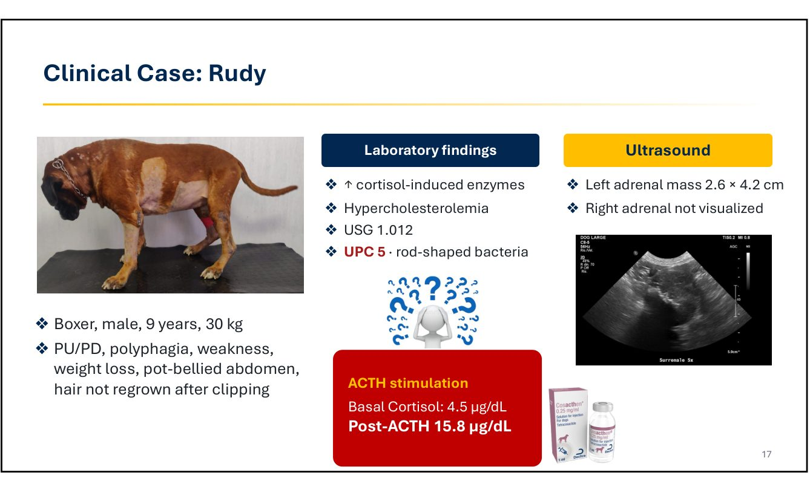
- 拳師犬，公，9 歲，30 kg。PU/PD、多食、無力、體重減輕、垂腹，剃毛後毛長不回來。
- 檢驗：皮質醇誘導的肝酵素上升、高膽固醇、USG 1.012、UPC 5、尿中有桿菌。
- 超音波：左腎上腺腫塊 2.6 × 4.2 cm，右腎上腺看不到（很小，可能萎縮）。
- 🎤 講者問台下要選哪個檢查。當時他們先做了 ACTH 刺激試驗，因為超音波是在檢查之後才做的。結果：基礎 4.5、刺激後 15.8 µg/dL，是正常的。
🎤 為什麼正常？腎上腺腫瘤的狗做 ACTH 刺激試驗不是好選擇，因為腫瘤本身大多已經失去 ACTH 受體。已經知道有腎上腺腫瘤時，就不要做 ACTH 刺激試驗，改做 LDDST 或 HDDST。HDDST 對 ADH 的區分能力更好一點。
上課筆記：腎上腺腫瘤會失去 ACTH 受體，ACTH 刺激試驗不準，建議用 LDDST。
💡 補充 腎上腺的 ACTH 受體是 MC2R。部分腫瘤（特別是腺癌）MC2R 表現減少，對 ACTH 反應變差；腫瘤儲備量也有限，有些還主要分泌皮質醇前驅物。相反地，ADH 自主分泌、不受 ACTH 控制，給地塞米松後第 8 小時幾乎都不會被抑制，所以 LDDST 對 ADH 的敏感度很高。
💡 補充 腎上腺的 ACTH 受體是 MC2R。部分腫瘤（特別是腺癌）MC2R 表現減少，對 ACTH 反應變差；腫瘤儲備量也有限，有些還主要分泌皮質醇前驅物。相反地，ADH 自主分泌、不受 ACTH 控制，給地塞米松後第 8 小時幾乎都不會被抑制，所以 LDDST 對 ADH 的敏感度很高。
🎤 ACTH 刺激試驗
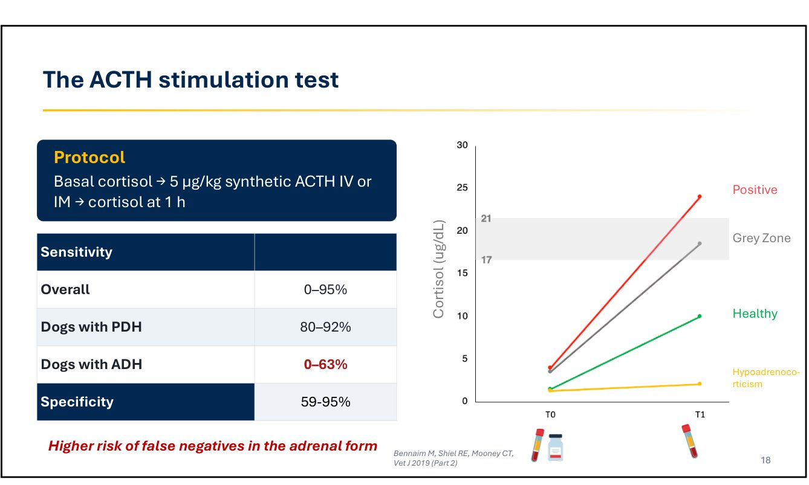
- 流程：基礎皮質醇 → 合成 ACTH 5 µg/kg IV 或 IM → 1 小時後測皮質醇。
- 敏感度：整體 0–95%，PDH 80–92%，ADH 只有 0–63%。特異度 59–95%，🎤 算是相當特異的檢查。
- 🎤 判讀：刺激後 > 21 µg/dL 為陽性，17–21 µg/dL 為灰色區。
- 🎤 目前沒有研究用新方法重新評估這個檢查。新方法數值偏低，可能會有更多病例落在灰色區。
「要診斷庫欣，我不會只相信單一檢查。」ACTH 刺激落在灰色區，就再做另一個檢查，例如 LDDST。
8. LDDST 與新切點
▾🎤 低劑量地塞米松抑制試驗
- 流程：dexamethasone 0.01 mg/kg IV，0、4、8 小時抽血。第 8 小時用來診斷，第 4 小時用來區分。
- 敏感度 85–97%，特異度 44–95%；合併其他疾病時特異度約 70%。
- 🎤 這是庫欣敏感度最好的內分泌檢查，也是講者的首選。有時候病患下午才來、時間不夠做 8 小時，就先做 ACTH 刺激，需要時再補做 LDDST。
三個注意事項：不要檢測症狀很嚴重的狗；檢測期間不做其他處置；盡量減少壓力。🎤 做 LDDST 的那天不要做超音波或其他有壓力的處置，皮質醇會升高，造成偽陽性。
🎤 LDDST 的判讀模式
- 先看第 8 小時：高於切點就是陽性。
- 再看第 4 小時：落在參考範圍內，或低於基礎值的 50%，提示 PDH。
| 模式 | 陽性預測值 | 講者的做法 |
|---|---|---|
| 完全沒有抑制 | 最好 | 庫欣犬最理想看到的模式 |
| 部分抑制 | 第二 | — |
| 逃脫型（escape） | 不太好 | 加做其他檢查、影像或臨床再確認 |
| 反向型（inverse） | 不太好，其他疾病也會出現 | 開始治療前先補更多資料 |
🎤 新抗體下的第 8 小時切點（Rossi, Del Baldo, Tardo 2026）
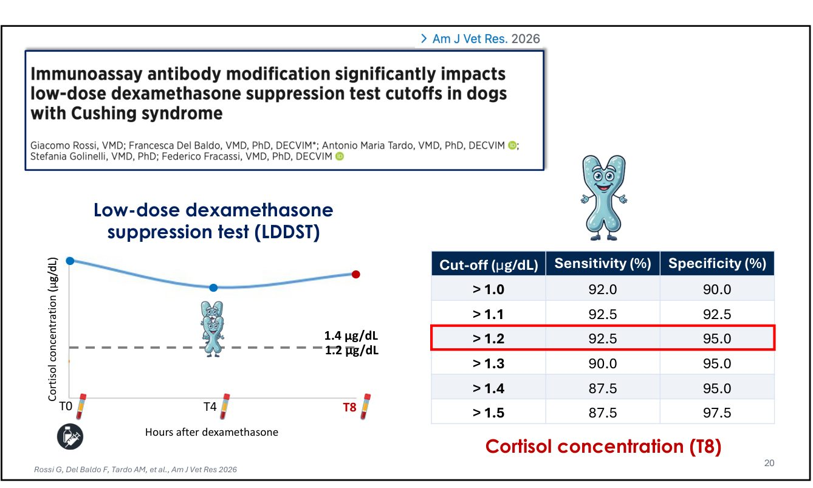
| 切點（µg/dL） | 敏感度 | 特異度 |
|---|---|---|
| > 1.0 | 92.0% | 90.0% |
| > 1.1 | 92.5% | 92.5% |
| > 1.2 | 92.5% | 95.0% |
| > 1.3 | 90.0% | 95.0% |
| > 1.4（傳統） | 87.5% | 95.0% |
| > 1.5 | 87.5% | 97.5% |
🎤 長期以來用 1.4 µg/dL，換抗體後講者現在比較常用 1.2。用 1.4 會漏掉落在 1.2–1.4 灰色區的病例。
9. 區分 PDH 與 ADH
▾🎤 四種方法
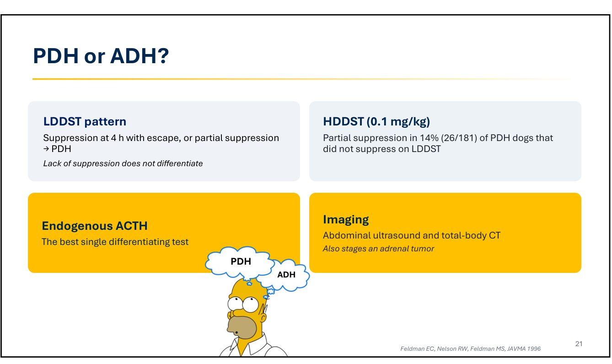
- LDDST 模式：第 4 小時抑制後逃脫，或部分抑制 → PDH。沒有抑制則無法區分。
- HDDST（0.1 mg/kg）：在 LDDST 沒抑制的 PDH 犬中，只有 14%（26/181）會部分抑制（Feldman 1996）。🎤 區分能力只比 LDDST 好一點點；但已經知道有腎上腺腫塊時，講者會選 HDDST。
- 內生性 ACTH：區分的最佳單一檢查。
- 影像：腹部超音波與全身 CT，也可以替腎上腺腫瘤分期。
🎤✍️ 內生性 ACTH
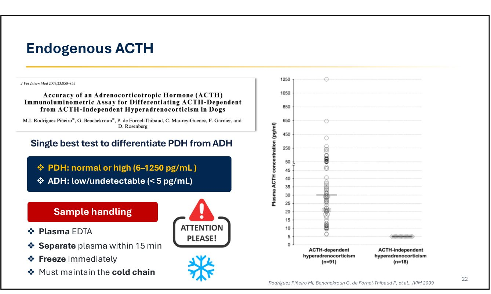
判讀
- PDH：正常或偏高（6–1250 pg/mL）
- ADH：偏低或測不到（< 5 pg/mL）
檢體處理
- EDTA 血漿
- 15 分鐘內分離血漿
- 立即冷凍
- 全程維持冷鏈
- 🎤 它是很好的區分檢查，但不是好的診斷檢查：PDH 的 ACTH 大多是正常的，只有少數偏高。
- 🎤 ACTH 很不穩定。沒有冷凍、沒有維持冷鏈，荷爾蒙會被分解，測到的低 ACTH 不是因為 ADH，而是因為樣本壞了。
上課筆記：ACTH 要冷鏈、要冷凍，很脆弱。
💡 補充 ACTH 是胜肽荷爾蒙，血漿中的蛋白酶會快速分解它，也會吸附在玻璃上。建議：預冷的 EDTA 塑膠管 → 放冰上 → 15 分鐘內（最好冷藏）離心 → 血漿分裝到塑膠管 → 立即冷凍 → 乾冰運送，不可解凍再冷凍。部分實驗室提供含 aprotinin（蛋白酶抑制劑）的採血管。採血要在給任何類固醇或做 LDDST 之前。結果偏低時，先回想檢體處理，再判定 ADH。
💡 補充 ACTH 是胜肽荷爾蒙，血漿中的蛋白酶會快速分解它，也會吸附在玻璃上。建議：預冷的 EDTA 塑膠管 → 放冰上 → 15 分鐘內（最好冷藏）離心 → 血漿分裝到塑膠管 → 立即冷凍 → 乾冰運送，不可解凍再冷凍。部分實驗室提供含 aprotinin（蛋白酶抑制劑）的採血管。採血要在給任何類固醇或做 LDDST 之前。結果偏低時，先回想檢體處理，再判定 ADH。
10. 影像：腹部超音波與腦下垂體
▾🎤 腹部超音波
伴隨發現
- 肝臟腫大、回音不均或偏高
- 泌尿道結石
- 軟組織鈣化
- 膽囊黏液囊腫
提示 ADH
- 兩側不對稱，對側萎縮
- 腺體結構消失
- 惡性：血管侵犯、肝臟轉移
- 超音波不是 PDH 的診斷檢查：大小正常不能排除；增生但沒症狀也不能診斷（Melián 2021）。
- 🎤 像 Rudy 那樣，對側腎上腺有時小到看不到。
🎤✍️ 什麼時候要做腦下垂體影像
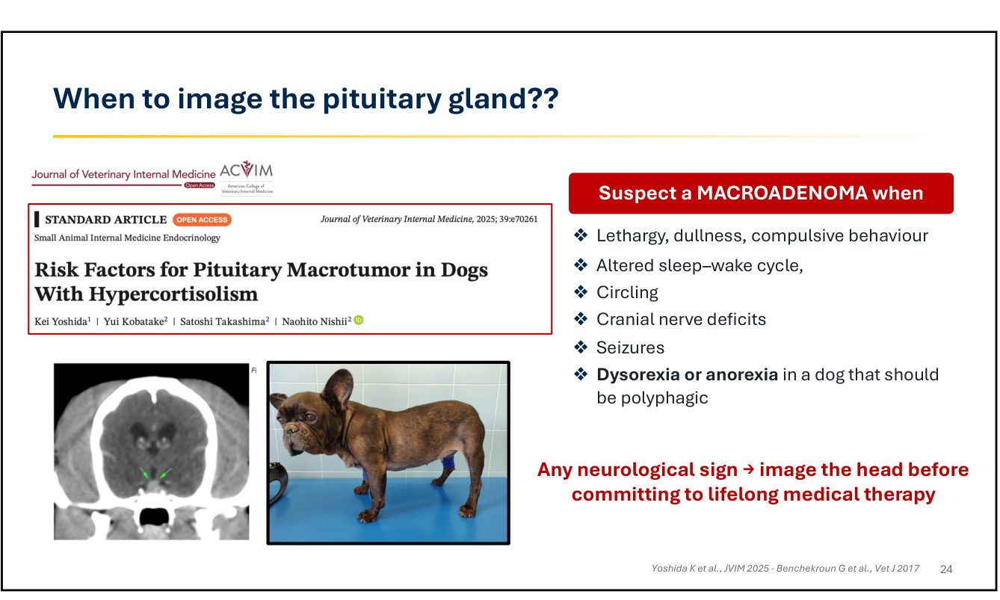
- 🎤 講者的做法：庫欣犬一律做腦下垂體影像。80% 的病例腫瘤在腦下垂體，要知道是小腫瘤還是大腫瘤。
- 懷疑大腺瘤的徵兆：嗜睡、沉鬱、強迫行為；睡眠週期改變；繞圈；腦神經缺損；癲癇；本該多食卻食慾差或不吃。
- 🎤 食慾下降時要檢查腦下垂體，因為這通常是食慾變差的主因；而且食慾下降是開始 trilostane 的禁忌。
- 🎤 最近的研究（Yoshida 2025）發現法鬥容易有大腫瘤，法鬥庫欣要看腦下垂體。
上課筆記：要測腦部腫瘤，特別是食慾變差的時候。
💡 補充 庫欣犬本來應該很能吃。大腫瘤往上長壓迫下視丘的食慾中樞，食慾變差常常是最早、甚至唯一的神經學表現。流程：先排除 trilostane 過量（停藥、做 ACTH 刺激）與胰臟炎、腎病等其他原因 → 安排頭部 CT/MRI。其他提示大腫瘤的線索：體溫與心跳偏低（Benchekroun 2017）、內生性 ACTH 很高、對 trilostane 反應不佳。
💡 補充 庫欣犬本來應該很能吃。大腫瘤往上長壓迫下視丘的食慾中樞，食慾變差常常是最早、甚至唯一的神經學表現。流程：先排除 trilostane 過量（停藥、做 ACTH 刺激）與胰臟炎、腎病等其他原因 → 安排頭部 CT/MRI。其他提示大腫瘤的線索：體溫與心跳偏低（Benchekroun 2017）、內生性 ACTH 很高、對 trilostane 反應不佳。
🎤 為什麼 CT 這麼重要
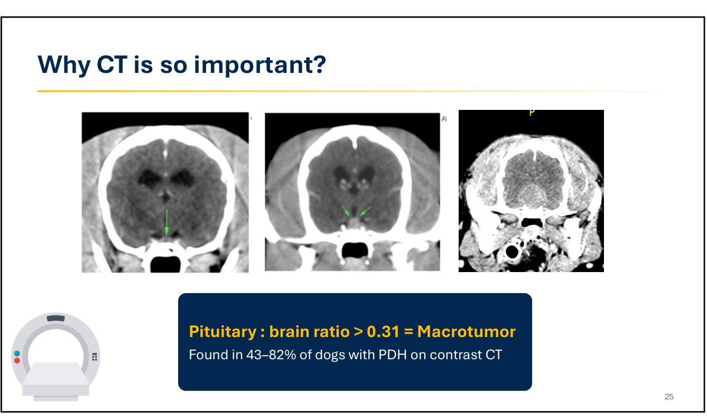
- 腦下垂體高度與腦面積比（P:B ratio）> 0.31 為大腫瘤。顯影 CT 下，43–82% 的 PDH 犬有大腫瘤。
- 🎤 腫瘤可以很小、可以開始接觸腦部（預期會有神經症狀），也可以非常巨大。腫瘤巨大時，講者不會開始 trilostane：trilostane 作用在腎上腺，降低皮質醇後失去負回饋，腫瘤會隨時間變大。飼主有意願的話，這是放射治療的病例，不是內科治療的病例。
11. 治療目標與 trilostane
▾🎤 治療目標與選項
- 目標：移除或控制過量 ACTH／皮質醇的來源；改善症狀；減少長期併發症與死亡率；改善狗與飼主的生活品質。
PDH（80–85%）
- 經蝶骨垂體切除術
- 放射治療（特別是大腫瘤）
- 內科治療
ADH（15–20%）
- 腎上腺切除術（最佳）
- 無法手術、飼主不願意、已轉移或其他禁忌時，用內科治療
🎤✍️ Trilostane 的藥物動力學
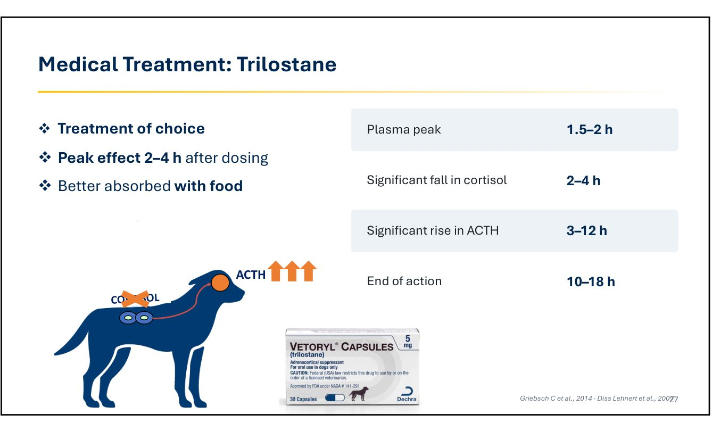
| 時間 | 事件 |
|---|---|
| 1.5–2 小時 | 血中濃度高峰 |
| 2–4 小時 | 皮質醇明顯下降 |
| 3–12 小時 | ACTH 明顯上升 |
| 10–18 小時 | 作用結束 |
- 首選藥物；與食物一起給吸收較好；給藥後 2–4 小時效果最大，🎤 所以監測的 ACTH 刺激試驗安排在給藥後 2–3 小時。
- 🎤 Trilostane 是可逆的酵素抑制劑，作用在腎上腺。皮質醇降低後，對腦下垂體的回饋消失，腦下垂體會變大、ACTH 會上升。吃 trilostane 的狗測 ACTH 會非常高。
🎤 起始劑量
- 起始劑量 0.5–1 mg/kg q12h（講者偏好低劑量起始）。
- 以下情況用 0.5 mg/kg q12h：
- 腎上腺依賴型（🎤 對這個藥比較敏感）
- 體重 > 15 kg
- 有任何其他疾病
- 不論體重，最多 30 mg q12h。🎤 就算狗 50、60、80 kg，這也是講者的上限。
🎤 一天一次還是兩次
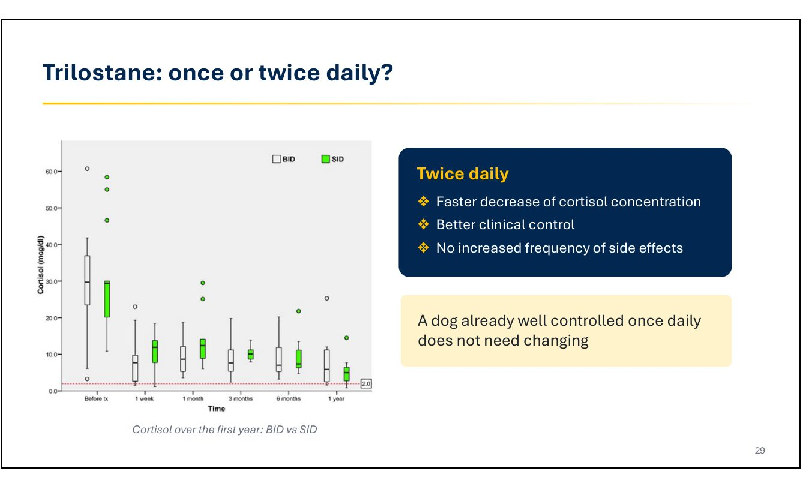
- 一天兩次：皮質醇下降較快、臨床控制較好、副作用沒有增加（Arenas 2013）。
- 🎤 講者完全偏好一天兩次，合併糖尿病的狗更重要，可以讓整天的皮質醇控制得更好。
- 已經用一天一次控制良好的狗，不需要改。
12. 預期效果與副作用
▾🎤 預期效果
- 對 65–90% 的狗有效。
- PU/PD、活動力、代謝異常：幾週內改善；多食、皮膚變化：要幾個月。
- 🎤 投影片上的法鬥有大腫瘤，只用 trilostane 治療，皮膚與症狀都大幅改善。
🎤✍️ 副作用
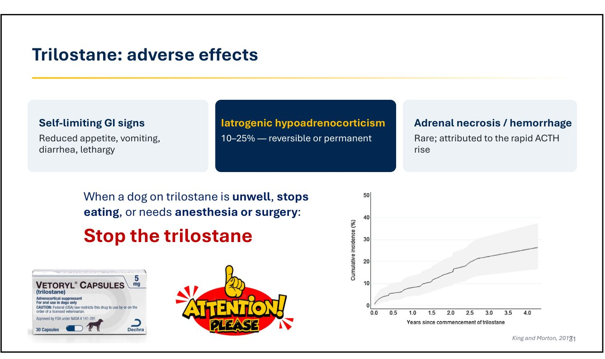
- 自限性腸胃症狀：食慾下降、嘔吐、下痢、嗜睡。🎤 可能是皮質醇降低後，原本被壓住的腸胃病變明顯了；也可能是皮質醇降太低。這時要減量或停藥。
- 醫源性腎上腺皮質功能低下（Addison）：10–25%，可逆或永久。🎤 發生率隨治療時間增加。
- 腎上腺壞死／出血：罕見，歸因於 ACTH 急遽上升。
上課筆記：造成 Addison 的不是 trilostane 本身，而是 ACTH 增加造成腎上腺壞死。🎤 講者原話：大量上升的 ACTH 造成腎上腺壞死與出血。
| 暫時性 | 永久性（壞死） | |
|---|---|---|
| 原因 | 劑量過高、過度抑制 | ACTH 驅動的腎上腺出血或壞死 |
| 停藥後 | 數天到數週恢復 | 不會恢復 |
| 電解質 | 通常正常 | 可能出現高血鉀、低血鈉 |
| 處置 | 停藥，必要時短期補充類固醇 | 終身補充糖皮質素 ± DOCP／fludrocortisone |
💡 補充 上表為整理者依講者說明與 Q&A（第 14 節）歸納。Trilostane 是可逆抑制劑，所以「停藥後會不會恢復」就是區分兩者的關鍵。
🎤✍️ 停藥原則
狗不舒服、不吃，或需要麻醉、手術時：先停 trilostane。
- 🎤 講者一定會教飼主：狗因為任何原因不舒服，就停 trilostane。
- 🎤 因為是可逆的抑制劑，如果症狀是藥物副作用，停藥後就會改善。停藥後還沒改善，代表有其他問題；但就算有其他問題，講者也一樣要停藥。
- 🎤 因為其他原因住院的狗，不要繼續吃 trilostane。先停藥，之後有理由再開始時，重新評估病患。
上課筆記：如果發生，老師會停藥。
💡 補充 後續：ACTH 刺激試驗確認過度抑制＋測電解質 → 依嚴重度輸液、短期糖皮質素，高血鉀／低血鈉時加礦物皮質素 → 定期追蹤。皮質醇回升、庫欣症狀回來，才用較低劑量重新開始；皮質醇持續測不到則改為終身補充。有些狗停藥後好幾個月才復發，甚至不復發。
💡 補充 後續：ACTH 刺激試驗確認過度抑制＋測電解質 → 依嚴重度輸液、短期糖皮質素，高血鉀／低血鈉時加礦物皮質素 → 定期追蹤。皮質醇回升、庫欣症狀回來，才用較低劑量重新開始；皮質醇持續測不到則改為終身補充。有些狗停藥後好幾個月才復發，甚至不復發。
13. 誰對 trilostane 反應不好
▾🎤✍️ Golinelli 2026（JVIM）
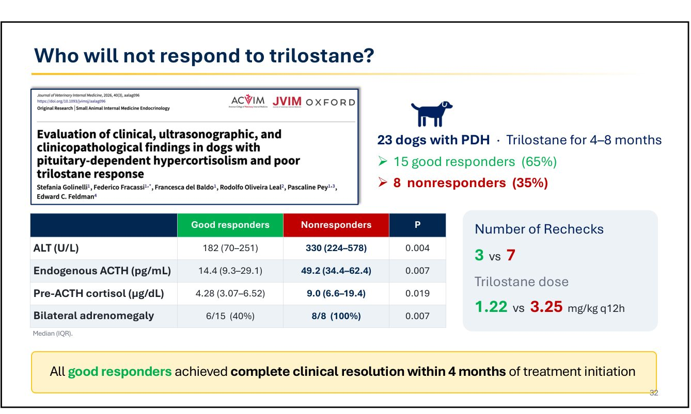
- 23 隻 PDH 犬，trilostane 治療 4–8 個月。依臨床表現定義：15 隻反應良好（65%），8 隻反應不佳（35%）。
| 治療前指標（中位數） | 反應良好 | 反應不佳 | p |
|---|---|---|---|
| ALT（U/L） | 182 | 330 | 0.004 |
| 內生性 ACTH（pg/mL） | 14.4 | 49.2 | 0.007 |
| ACTH 刺激前皮質醇（µg/dL） | 4.28 | 9.0 | 0.019 |
| 兩側腎上腺腫大 | 40% | 100% | 0.007 |
| 回診次數 | 3 | 7 | — |
| Trilostane 劑量（mg/kg q12h） | 1.22 | 3.25 | — |
反應良好的狗，全部在開始治療後 4 個月內完全緩解。講者認為這是這篇研究最重要的訊息。
- 🎤 治療 6 個月到 1 年還沒反應的狗，再久大概也不會有反應。可以繼續加藥，但很可能沒有用，要考慮其他療法（下一場 Bugbee 會談）。
上課筆記：四個月沒有反應，可能就是沒有用了。
💡 補充 宣告無效前先排除：服藥順從性、是否與食物一起給、藥品（調劑）品質、監測抽血時機、合併疾病、診斷是否正確。接著安排頭部影像（反應不佳組 ACTH 高、兩側腎上腺都腫大，很多可能是大腫瘤），討論放射治療或垂體切除。研究只有 23 隻 PDH 犬，4 個月適合當重新評估點，不是絕對界線。
💡 補充 宣告無效前先排除：服藥順從性、是否與食物一起給、藥品（調劑）品質、監測抽血時機、合併疾病、診斷是否正確。接著安排頭部影像（反應不佳組 ACTH 高、兩側腎上腺都腫大，很多可能是大腫瘤），討論放射治療或垂體切除。研究只有 23 隻 PDH 犬，4 個月適合當重新評估點，不是絕對界線。
14. Q&A
▾Q1：講者說要避免院內皮質醇機器，但院內機器 2 小時就有結果，做 trilostane 監測的 ACTH 刺激時可以馬上調劑量，不是比較好嗎？
🎤 2 小時和 24 小時調劑量，講者看不出有什麼好處。影響皮質醇的變數很多，他要用完全驗證過、敏感度和特異度更好的方法。診斷時尤其如此：要開始長期治療之前，必須百分之百確定真的是庫欣，不能因為方法不夠好而把皮質醇偏高當成庫欣。這些多半是慢性病患，不需要幾小時內處理；就算是加護病房的狀況，第一個決定也只是停 trilostane。院內機器可以用，但他支持 ESVE 的建議，偏好實驗室方法。
Q2：在亞洲常用院內機器做 ACTH 刺激，有時候刺激前的皮質醇比刺激後還高，怎麼解釋？
🎤 可能原因：
- 抽刺激前的血時，狗非常緊張。
- 剛好抽在 trilostane 給藥後 2–3 小時的最大作用點，所以數值低；晚幾個小時再抽，皮質醇又會回升。
- 不同方法本身就會測出不同的皮質醇結果。
Q3：Trilostane 造成腎上腺出血或壞死的狗，最後都變成 Addison 了嗎？
🎤 是的。10–25% 會發生醫源性腎上腺皮質功能低下；這個數字來自較舊、劑量較高的研究。表現差異很大：
- 有些變成永久性，要當 Addison 治療，補充糖皮質素和／或礦物皮質素（DOCP）。
- 有些只要停 trilostane，不需要其他藥物。
- 有些是暫時性，之後要重新開始 trilostane 治療庫欣。
Q4：老年病患同時有 CKD 或其他系統的癌症，是不是要永遠停 trilostane？
🎤 還是可以用，但要小心，特別是同時用 ACE 抑制劑或 telmisartan 時，因為它們作用在同一條路徑上。最重要的是食慾，也不要讓病患脫水。每隻狗都不同，要看是否適合；食慾不好就停藥。
💡 補充 「同一條路徑」應是指 RAAS／醛固酮：trilostane 也會降低醛固酮，加上 ACEi／ARB 可能增加高血鉀的風險，要追蹤電解質。
💡 補充 「同一條路徑」應是指 RAAS／醛固酮：trilostane 也會降低醛固酮，加上 ACEi／ARB 可能增加高血鉀的風險，要追蹤電解質。
15. 場邊討論：台灣的皮質醇檢驗
▾🎤 休息時間台灣與會醫師的討論（非講者）
錄音在演講結束後仍持續錄到台下醫師的中文討論，以下整理與本場相關的部分。這是與會者的意見，不是講者的建議。
- 切點不是臨床醫師決定的，是實驗室決定的。講者的 LDDST 1.2 µg/dL 是 Immulite 新抗體的數據，送不同的檢驗所只能當參考，要看該實驗室自己的參考值。
- 有醫師指出：台灣幾間檢驗所的皮質醇大多沒有提供驗證（validation）資料，拿這樣的報告和國外專家討論，對方會覺得很奇怪；不同實驗室測出的皮質醇差異很大。
- 院內機器有測量上限（與會者提到某院內機器超過約 30 µg/dL 就測不出來），監測時一直顯示「> 30」就很難判斷變化幅度。
- 監測時，ACTH 刺激後皮質醇落在目標範圍（與會者提到 1.5–5.5 µg/dL）就不用加藥；遠高於目標就要加。加藥時多半保守地逐步增加（例如 0.5 → 1 mg/kg），不敢一次加很多。
- 結論：內分泌疾病要好好跟飼主討論他能接受的方案，飼主要夠配合、夠信任。
補充：1.5–5.5 µg/dL 是傳統（舊抗體）的 ACTH 刺激後監測目標。抗體改變後目標範圍可能也要調整，請以送檢實驗室提供的範圍為準。同一段錄音中還有關於 DOCP 拉長注射間隔的討論，請見 11 犬 Addison 氏症。
Take-home、更正表與參考資料
▾Take-home
- 先懷疑，再檢測。基本檢查全正常、沒有 PU/PD，都要重新考慮診斷。
- Immulite 換抗體：血清約 -23%、尿液約 -70%。UCCR 敏感度剩 80%；LDDST 第 8 小時切點約 1.2 µg/dL；ACTH 刺激尚未重新驗證。
- ACTH 刺激對 ADH 容易偽陰性（腫瘤失去 ACTH 受體）；已知有腎上腺腫塊就做 LDDST／HDDST。
- 不要只相信單一檢查；LDDST 是首選，做檢查那天不要做其他處置。
- 內生性 ACTH 是最好的區分檢查，不是診斷檢查；冷鏈處理不當會偽低。
- 腦下垂體影像：有神經症狀或食慾變差一定要做；P:B > 0.31 為大腫瘤；巨大腫瘤不用 trilostane，改放射治療。
- Trilostane：0.5–1 mg/kg q12h、與食物一起、最多 30 mg q12h；偏好一天兩次。
- 不舒服、不吃、麻醉、住院 → 先停藥。醫源性 Addison 10–25%，可能是 ACTH 造成的腎上腺壞死。
- 每次回診都量血壓；肌強直通常不會好。
- 4 個月沒有完全緩解：繼續加藥效益低，考慮其他療法。
【更正】 逐字稿轉文字錯誤對照
| 逐字稿 | 應為 |
|---|---|
| pushing / bushing / cushioning / push | Cushing |
| patinson / ivory function | Addison／腎上腺功能（低下 vs 亢進） |
| hyperkinesia / hyperproliferism | hyperadrenocorticism／hypercortisolism |
| victory disease | pituitary-dependent（PDH） |
| Alive Group / ESBE / SVE / ESB | ESVE 的 ALIVE 計畫 |
| William Pushkin / four metacarpal legs | Harvey Cushing／four matches as legs |
| UPPD / UBD / UPT / DCD / pupd | PU/PD |
| Dr. Muni | Mooney（Bennaim, Shiel, Mooney 2019 review） |
| cationoskudis | calcinosis cutis（皮膚鈣化） |
| Cushing myelopathy / muscle myelopathy | Cushing myotonia（肌強直） |
| JAMA | JVIM（García San José 2021） |
| auto globin | haptoglobin（結合球蛋白） |
| C peptide estimation test | ACTH stimulation test（篩檢） |
| Mulai two thousand / Millite | Immulite 2000 |
| average bias about 20 percent in serum | 講義為 -23% |
| CTH steam / SCS / CTA test | ACTH stimulation test |
| desmethylsulfonylurea / zonulin suppression test | dexamethasone suppression test |
| Gadofa TA / DTA | cut-off T8（第 8 小時切點） |
| one picomole per gig / nine percent | 0.1 mg/kg／講義為 14%（26/181） |
| Nodjus CTH / dogilase CTH / CDH / GH | endogenous ACTH |
| B D H | PDH |
| cordate mucosil | gallbladder mucocele（膽囊黏液囊腫） |
| tubular gland | pituitary gland |
| suspect a micro tumor（神經症狀時） | macro tumor（大腫瘤） |
| check the thyroid gland（食慾下降時） | pituitary gland |
| P:B ratio more than 0.41 | 講義為 0.31 |
| trastuzumab / trimegestin / triostat / triptol / trial step | trilostane |
| C T scan test after two to three hours | 給藥後 2–3 小時做 ACTH 刺激試驗 |
| hypotremal corticism / atrophy（Q&A） | hypoadrenocorticism（Addison） |
| bilateral adrenal medullary | bilateral adrenomegaly |
| Dr. Bagby / Bockby | Dr. Bugbee（下一場） |
| Dr. Taro | Dr. Tardo |
參考資料
Tardo A. Hypercortisolism: diagnostics and medical treatment. VET-KU × Texas A&M IM Conference, 2026-10-07（講義與課堂逐字稿「完整記錄」PDF）。
課堂錄音與逐字稿（Plaud）。連結（逐字稿有轉文字錯誤，請對照本頁更正表）
Bennaim M, Shiel RE, Mooney CT. Diagnosis of spontaneous hyperadrenocorticism in dogs. Part 1 & Part 2. Vet J. 2019;252:105342, 105343.
Carotenuto G, Malerba E, Dolfini C, et al. Cushing's syndrome—an epidemiological study based on a canine population of 21,281 dogs. Open Vet J. 2019;9:27–32.
Corsini A, Dondi F, Serio DG, et al. Calcium and phosphate homeostasis in dogs with newly diagnosed naturally occurring hypercortisolism. J Vet Intern Med. 2021;35:1265–1273.
Golinelli S, Fracassi F, Bianchi E, et al. Clinical features of muscle stiffness in 37 dogs with concurrent naturally occurring hypercortisolism. J Vet Intern Med. 2023;37:578–585.
García San José P, et al. Prevalence and risk factors associated with systemic hypertension in dogs with spontaneous hyperadrenocorticism. J Vet Intern Med. 2020;34:1768–1778；Changes in systolic blood pressure in dogs with PDH during the first year of trilostane treatment. J Vet Intern Med. 2021;35:130–141.
Del Baldo F, et al. Urinary cortisol-to-creatinine ratio using a chemiluminescent assay has limited diagnostic accuracy for canine hypercortisolism. Am J Vet Res. 2025.
Rossi G, Del Baldo F, Tardo AM, et al. Immunoassay antibody modification significantly impacts low-dose dexamethasone suppression test cutoffs in dogs with Cushing syndrome. Am J Vet Res. 2026;87(6).
Feldman EC, Nelson RW, Feldman MS. Use of low- and high-dose dexamethasone tests for distinguishing PDH from adrenal tumor hyperadrenocorticism in dogs. J Am Vet Med Assoc. 1996;209:772–775.
Rodríguez Piñeiro MI, Benchekroun G, de Fornel-Thibaud P, et al. Accuracy of an ACTH immunoluminometric assay for differentiating ACTH-dependent from ACTH-independent hyperadrenocorticism in dogs. J Vet Intern Med. 2009;23:850–855.
Melián C, Pérez-López L, Saavedra P, et al. Ultrasound evaluation of adrenal gland size in clinically healthy dogs and in dogs with hyperadrenocorticism. Vet Rec. 2021;188:e80.
Benchekroun G, et al. Dogs with macroadenomas have lower body temperature and heart rate than dogs with microadenomas. Vet J. 2017;227:42–45；Yoshida K, et al. Risk factors for pituitary macrotumor in dogs with hypercortisolism. J Vet Intern Med. 2025;39:e70261.
Sanders K, Kooistra HS, Galac S. Treating canine Cushing's syndrome: current options and future prospects. Vet J. 2018;241:42–51.
Griebsch C, Lehnert C, Williams GJ, et al. Effect of trilostane on hormone and serum electrolyte concentrations in dogs with PDH. J Vet Intern Med. 2014;28:160–165.
Feldman EC, Kass PH. Trilostane dose versus body weight in the treatment of naturally occurring PDH in dogs. J Vet Intern Med. 2012;26:1078–1080.
Arenas C, Melián C, Pérez-Alenza MD. Evaluation of 2 trilostane protocols for the treatment of canine PDH: twice daily versus once daily. J Vet Intern Med. 2013;27:1478–1485.
King JB, Morton JM. Incidence and risk factors for hypoadrenocorticism in dogs treated with trilostane. Vet J. 2017;230:24–29.
Golinelli S, Fracassi F, del Baldo F, et al. Evaluation of clinical, ultrasonographic, and clinicopathological findings in dogs with PDH and poor trilostane response. J Vet Intern Med. 2026;40(3):aalag096.